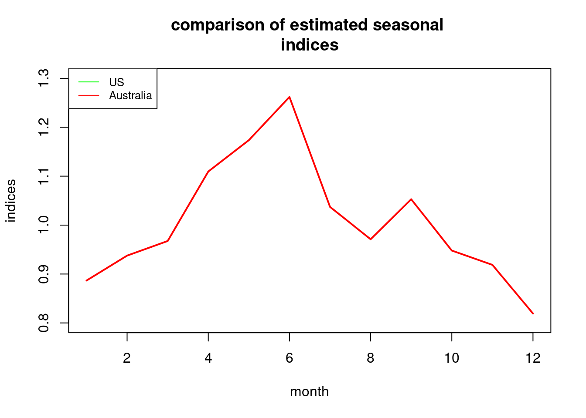
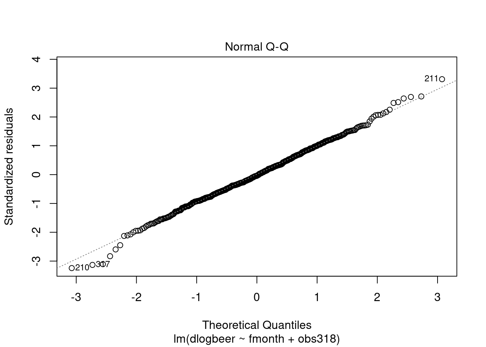
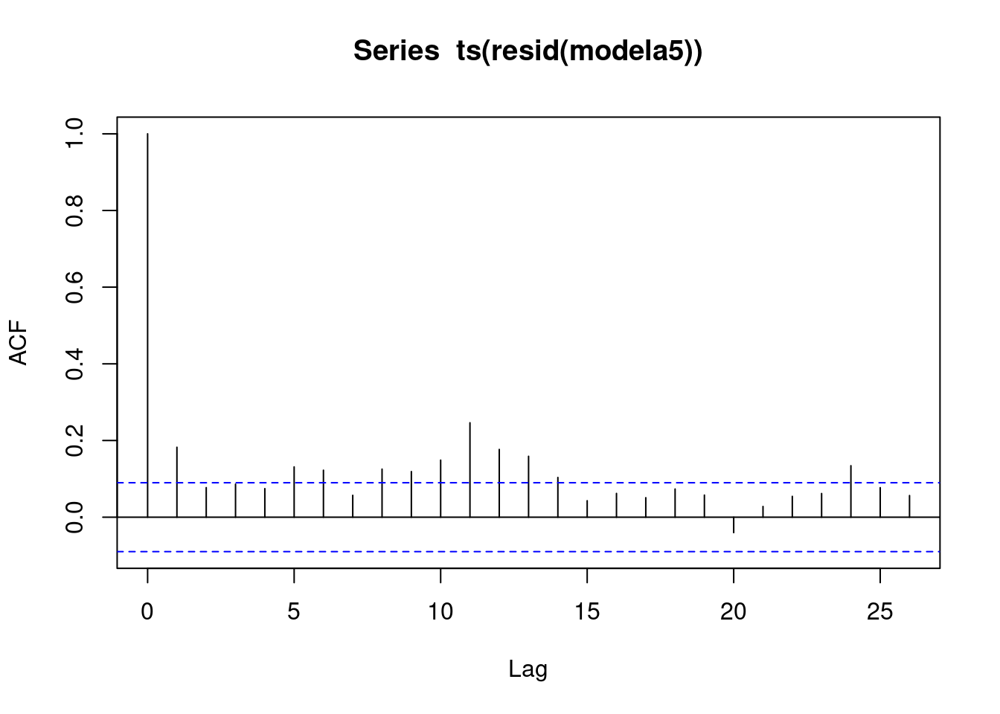
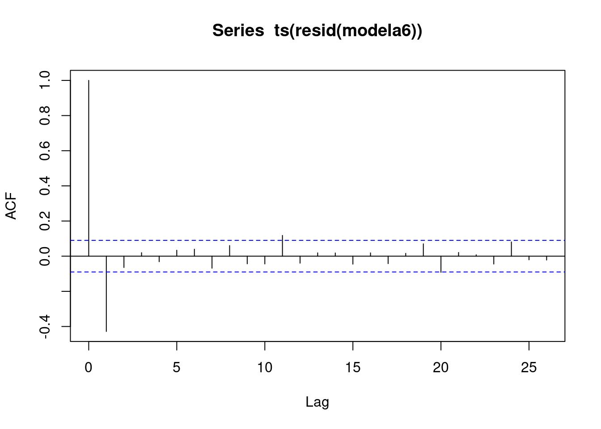

2 multiple regression models
usbeer <- read.csv("/cloud/project/data/beernew.txt")
attach(usbeer)
head(usbeer)## year month time beer c348 s348 c432 s432
## 1 1987 1 1 15.601 -0.57757270 0.8163393 -0.9101060 0.4143756
## 2 1987 2 2 15.633 -0.33281954 -0.9429905 0.6565858 -0.7542514
## 3 1987 3 3 17.656 0.96202767 0.2729519 -0.2850193 0.9585218
## 4 1987 4 4 17.422 -0.77846230 0.6276914 -0.1377903 -0.9904614
## 5 1987 5 5 17.436 -0.06279052 -0.9980267 0.5358268 0.8443279
## 6 1987 6 6 18.584 0.85099448 0.5251746 -0.8375280 -0.54639432.0.1 additivie decomposition model with a fourth-degree polynomial trend
Seasonal indices add to 0 for all t. \[ \begin{equation} y_t = \beta_0 + \beta_2t^2 + \beta_3t^3 + \beta_4t^4 + S_t + \epsilon_t \end{equation} \]
R creates dummies.
fmonth<-as.factor(month)
levels(fmonth)## [1] "1" "2" "3" "4" "5" "6" "7" "8" "9" "10" "11" "12"class(time)## [1] "integer"time <- as.numeric(time)
class(time)## [1] "numeric"model1<- lm(beer~time+I(time^2)+I(time^3)+I(time^4)+fmonth);summary(model1)##
## Call:
## lm(formula = beer ~ time + I(time^2) + I(time^3) + I(time^4) +
## fmonth)
##
## Residuals:
## Min 1Q Median 3Q Max
## -1.33863 -0.26965 0.01012 0.25978 1.52952
##
## Coefficients:
## Estimate Std. Error t value Pr(>|t|)
## (Intercept) 1.556e+01 1.390e-01 111.933 < 2e-16 ***
## time 1.523e-02 4.350e-03 3.502 0.000521 ***
## I(time^2) -1.675e-04 4.732e-05 -3.540 0.000453 ***
## I(time^3) 6.496e-07 1.905e-07 3.410 0.000723 ***
## I(time^4) -8.780e-10 2.533e-10 -3.466 0.000594 ***
## fmonth2 -6.423e-01 1.132e-01 -5.676 2.87e-08 ***
## fmonth3 1.579e+00 1.132e-01 13.950 < 2e-16 ***
## fmonth4 1.447e+00 1.132e-01 12.786 < 2e-16 ***
## fmonth5 2.595e+00 1.132e-01 22.930 < 2e-16 ***
## fmonth6 2.862e+00 1.132e-01 25.289 < 2e-16 ***
## fmonth7 2.363e+00 1.132e-01 20.874 < 2e-16 ***
## fmonth8 1.950e+00 1.132e-01 17.223 < 2e-16 ***
## fmonth9 2.838e-01 1.132e-01 2.507 0.012627 *
## fmonth10 9.398e-03 1.132e-01 0.083 0.933896
## fmonth11 -1.264e+00 1.132e-01 -11.161 < 2e-16 ***
## fmonth12 -1.700e+00 1.133e-01 -15.013 < 2e-16 ***
## ---
## Signif. codes: 0 '***' 0.001 '**' 0.01 '*' 0.05 '.' 0.1 ' ' 1
##
## Residual standard error: 0.4455 on 356 degrees of freedom
## Multiple R-squared: 0.9237, Adjusted R-squared: 0.9204
## F-statistic: 287.2 on 15 and 356 DF, p-value: < 2.2e-16examine residuals
plot(ts(resid(model1),start=c(1987,1),freq=12),xlab="time",ylab="residu als",main="Residuals of Model 1")
normal quantile plot of residuals. tails are a bit long relative to normaility. But not much of a problem. Null of Shapiro Wilk is normality of residuals
qqnorm(resid(model1))
qqline(resid(model1))
shapiro.test(resid(model1))##
## Shapiro-Wilk normality test
##
## data: resid(model1)
## W = 0.99333, p-value = 0.09881Calculate and interpret estimated seasonal indices from the model. Selects estimated intercpet coefficients and the estimated coefficients for the fmonth dummies, then calculates the seasonal index estimates from these. In June, production is 2.072 million barrels above the level of the trends…
b1<-coef(model1)[1]
b2<-coef(model1)[6:16]+b1
b3<-c(b1,b2)
seas<-b3-mean(b3)
seas## (Intercept) fmonth2 fmonth3 fmonth4 fmonth5 fmonth6
## -0.7902230 -1.4325268 0.7884912 0.6568310 1.8049441 2.0721854
## fmonth7 fmonth8 fmonth9 fmonth10 fmonth11 fmonth12
## 1.5725549 1.1594398 -0.5064181 -0.7808250 -2.0540390 -2.4904147Variable seas to time series clas sand plot indices
seas.ts<-ts(seas)
plot(seas.ts,ylab="seasonal indices",xlab="month")
Partial F tests and hypothesis. Partial F test tests the null that some of the regression coefficients are simultaneously 0. Fir two models, one with all regressers, and a reduces. In the latter, omit variables corresponding to the parameters which are hypothesized to be 0.
Suppose T is number of observations. The F stat for the partial F test can be calculated from the R squared of the two models. The F statistic is: \[ \begin{equation} F_{r,T-k-1} = \frac{((R^2(full)-R^2(reduced))/r}{(1-R^2(full))/(T-k-1)} \end{equation} \]
where numerator DF = r and T-k-1 denominator degrees of freedom. Reject null if partial F is large (p value small).
model2<-lm(beer~time+I(time^2)+I(time^3)+I(time^4))
summary(model2)##
## Call:
## lm(formula = beer ~ time + I(time^2) + I(time^3) + I(time^4))
##
## Residuals:
## Min 1Q Median 3Q Max
## -3.4602 -1.1566 0.1497 1.3892 3.0871
##
## Coefficients:
## Estimate Std. Error t value Pr(>|t|)
## (Intercept) 1.643e+01 4.099e-01 40.077 <2e-16 ***
## time 1.386e-02 1.518e-02 0.913 0.362
## I(time^2) -1.643e-04 1.652e-04 -0.994 0.321
## I(time^3) 6.708e-07 6.651e-07 1.008 0.314
## I(time^4) -9.418e-10 8.846e-10 -1.065 0.288
## ---
## Signif. codes: 0 '***' 0.001 '**' 0.01 '*' 0.05 '.' 0.1 ' ' 1
##
## Residual standard error: 1.556 on 367 degrees of freedom
## Multiple R-squared: 0.04045, Adjusted R-squared: 0.02999
## F-statistic: 3.867 on 4 and 367 DF, p-value: 0.004317summary(model1)$r.squared## [1] 0.9236588summary(model2)$r.squared## [1] 0.04044511\[ \begin{equation} F_{11,356} = \frac{((0.92366-0.04045)/11}{(1-0.92366)/(356)} = 374.43 \end{equation} \]
confirm with test
anova(model2,model1)## Analysis of Variance Table
##
## Model 1: beer ~ time + I(time^2) + I(time^3) + I(time^4)
## Model 2: beer ~ time + I(time^2) + I(time^3) + I(time^4) + fmonth
## Res.Df RSS Df Sum of Sq F Pr(>F)
## 1 367 888.27
## 2 356 70.67 11 817.6 374.42 < 2.2e-16 ***
## ---
## Signif. codes: 0 '***' 0.001 '**' 0.01 '*' 0.05 '.' 0.1 ' ' 1Do residuals suggest that the model disturbance term forms an uncorrelated sequence? Measure lag 1 correlation of the residuals, correlation between residuals which are directly adjacent in time. Lag one correlation not significant.
r<-resid(model1)[2:372]
r1<-resid(model1)[1:371]
cor.test(r,r1)##
## Pearson's product-moment correlation
##
## data: r and r1
## t = 1.4767, df = 369, p-value = 0.1406
## alternative hypothesis: true correlation is not equal to 0
## 95 percent confidence interval:
## -0.02536446 0.17708380
## sample estimates:
## cor
## 0.07664964Autocorrelation structure of residuals by estimates of the correlations at multiple lags. See significant residual correlations at many lags (significance is indicates by extention beyond the blue dashed lines).
acf(ts(resid(model1)),36)
2.0.2 Additive decomposition model with cosine and sine seasonal dummies and inclusion of an intercept
\[ \begin{equation} y_t = \beta_0 + \beta_1t + \beta_2t^2 + \beta_3t^3 + \beta_4t^4 + \sum_{j=1}^{5}(\gamma_j cos\frac{2\pi jt}{12} + \delta_j \frac{2\pi jt}{12}) + \gamma_6(-1)^{t} + \epsilon_t \end{equation} \]
Seasonal is now written as the sum of a fundamental component with period 12 and its five overtones. The jth component has amplitude
\[ \sqrt{\gamma_j^2 + \delta_j^2}, j = 1,...,5 \]
cosm<-matrix(nrow=length(time),ncol=6)
sinm<-matrix(nrow=length(time),ncol=5)
for(i in 1:5){cosm[,i]<-cos(2*pi*i*time/12)
sinm[,i]<-sin(2*pi*i*time/12)}
cosm[,6]<-cos(pi*time)
model6<- lm(beer~time+I(time^2)+I(time^3)+I(time^4)+cosm[,1]+sinm[,1]+cosm[,2]+sinm[,2]+cosm[,3]+sinm[,3]+cosm[,4]+sinm[,4]+cosm[,5]+sinm[,5]+cosm[,6])
options(digits=10)
summary(model6)##
## Call:
## lm(formula = beer ~ time + I(time^2) + I(time^3) + I(time^4) +
## cosm[, 1] + sinm[, 1] + cosm[, 2] + sinm[, 2] + cosm[, 3] +
## sinm[, 3] + cosm[, 4] + sinm[, 4] + cosm[, 5] + sinm[, 5] +
## cosm[, 6])
##
## Residuals:
## Min 1Q Median 3Q Max
## -1.33863334 -0.26964756 0.01011539 0.25978076 1.52951509
##
## Coefficients:
## Estimate Std. Error t value Pr(>|t|)
## (Intercept) 1.634990e+01 1.174717e-01 139.18164 < 2.22e-16 ***
## time 1.523140e-02 4.349744e-03 3.50168 0.00052115 ***
## I(time^2) -1.675209e-04 4.732317e-05 -3.53993 0.00045335 ***
## I(time^3) 6.496385e-07 1.904884e-07 3.41038 0.00072317 ***
## I(time^4) -8.780189e-10 2.533498e-10 -3.46564 0.00059359 ***
## cosm[, 1] -1.994269e+00 3.267171e-02 -61.03962 < 2.22e-16 ***
## sinm[, 1] 1.738916e-01 3.270197e-02 5.31747 1.8626e-07 ***
## cosm[, 2] -3.919055e-02 3.267142e-02 -1.19954 0.23111728
## sinm[, 2] 1.273539e-01 3.267614e-02 3.89746 0.00011615 ***
## cosm[, 3] -8.882959e-02 3.267141e-02 -2.71888 0.00687115 **
## sinm[, 3] 3.354931e-02 3.267141e-02 1.02687 0.30517856
## cosm[, 4] -3.403903e-02 3.267141e-02 -1.04186 0.29818368
## sinm[, 4] 1.703934e-01 3.266983e-02 5.21562 3.1153e-07 ***
## cosm[, 5] -1.982014e-01 3.267141e-02 -6.06651 3.3427e-09 ***
## sinm[, 5] 5.071124e-01 3.266921e-02 15.52264 < 2.22e-16 ***
## cosm[, 6] -1.358850e-01 2.310134e-02 -5.88213 9.3415e-09 ***
## ---
## Signif. codes: 0 '***' 0.001 '**' 0.01 '*' 0.05 '.' 0.1 ' ' 1
##
## Residual standard error: 0.4455463 on 356 degrees of freedom
## Multiple R-squared: 0.9236588, Adjusted R-squared: 0.9204422
## F-statistic: 287.1518 on 15 and 356 DF, p-value: < 2.2204e-162.0.3 Australian beer
ausbeer <- read.csv("/cloud/project/data/beeraustralia.txt")
attach(ausbeer)## The following objects are masked from usbeer:
##
## beer, month, yearhead(ausbeer)## year month beer dlogbeer obs317 obs318
## 1 1956 1 93.2 NA 0 0
## 2 1956 2 96.0 0.0296004698 0 0
## 3 1956 3 95.2 -0.0083682500 0 0
## 4 1956 4 77.1 -0.2108766610 0 0
## 5 1956 5 70.9 -0.0838328470 0 0
## 6 1956 6 64.8 -0.0899648300 0 0fmonth<- as.factor(month)
plot(ts(beer,start=c(1956,1),freq=12),xlab="time",ylab="beer production",main="Australia monthly beer production")
time<-as.numeric(1:length(beer))
modela1<-lm(log(beer)~poly(time,5)+fmonth);summary(modela1) ##
## Call:
## lm(formula = log(beer) ~ poly(time, 5) + fmonth)
##
## Residuals:
## Min 1Q Median 3Q Max
## -0.262121447 -0.039685223 0.003353281 0.045376012 0.189701314
##
## Coefficients:
## Estimate Std. Error t value Pr(>|t|)
## (Intercept) 4.91985407 0.01092600 450.28878 < 2.22e-16 ***
## poly(time, 5)1 4.22453048 0.06909104 61.14440 < 2.22e-16 ***
## poly(time, 5)2 -2.42218832 0.06910805 -35.04929 < 2.22e-16 ***
## poly(time, 5)3 -0.40300589 0.06910164 -5.83207 1.0340e-08 ***
## poly(time, 5)4 0.75754529 0.06912559 10.95897 < 2.22e-16 ***
## poly(time, 5)5 -0.21520612 0.06911476 -3.11375 0.0019628 **
## fmonth2 -0.06588789 0.01544775 -4.26521 2.4264e-05 ***
## fmonth3 0.01500563 0.01544817 0.97135 0.3318841
## fmonth4 -0.08996734 0.01544887 -5.82356 1.0843e-08 ***
## fmonth5 -0.12130718 0.01544984 -7.85168 2.9262e-14 ***
## fmonth6 -0.23583124 0.01545109 -15.26309 < 2.22e-16 ***
## fmonth7 -0.15681336 0.01545261 -10.14802 < 2.22e-16 ***
## fmonth8 -0.10091698 0.01545442 -6.52997 1.7473e-10 ***
## fmonth9 -0.06956163 0.01554996 -4.47343 9.7165e-06 ***
## fmonth10 0.06736856 0.01555057 4.33222 1.8146e-05 ***
## fmonth11 0.12355807 0.01555133 7.94518 1.5121e-14 ***
## fmonth12 0.19610076 0.01555224 12.60917 < 2.22e-16 ***
## ---
## Signif. codes: 0 '***' 0.001 '**' 0.01 '*' 0.05 '.' 0.1 ' ' 1
##
## Residual standard error: 0.06908382 on 459 degrees of freedom
## Multiple R-squared: 0.9341762, Adjusted R-squared: 0.9318817
## F-statistic: 407.1352 on 16 and 459 DF, p-value: < 2.2204e-16b1<-coef(modela1)[1]
b2<-coef(modela1)[7:17]+b1
b3<-c(b1,b2)
seasa1<-exp(b3-mean(b3))
seasa1## (Intercept) fmonth2 fmonth3 fmonth4 fmonth5 fmonth6
## 1.0371961363 0.9710601714 1.0528772762 0.9479568581 0.9187087427 0.8192957166
## fmonth7 fmonth8 fmonth9 fmonth10 fmonth11 fmonth12
## 0.8866612193 0.9376336898 0.9674993016 1.1094779767 1.1736037190 1.2619041504usseas.ts<-ts(exp(seasa1))
ausseas.ts<-ts(seasa1)
ausseas.ts<-c(ausseas.ts,ausseas.ts)[7:18]
plot(usseas.ts,ylim=c(0.8,1.3),xlab="month",ylab="seasonal
indices",main="comparison of estimated seasonal
indices",col="green",lwd=2)
lines(ausseas.ts,col="red",lwd=2)
legend("topleft",legend=c("US","Australia"),col=c("green","red"),lty=1,
cex=0.8) 
acf(ts(resid(modela1)))
modela2<-lm(dlogbeer~fmonth);summary(modela2) ##
## Call:
## lm(formula = dlogbeer ~ fmonth)
##
## Residuals:
## Min 1Q Median 3Q Max
## -0.31502521 -0.06119002 -0.00417386 0.06318444 0.44469835
##
## Coefficients:
## Estimate Std. Error t value Pr(>|t|)
## (Intercept) -0.19534363 0.01553995 -12.57041 < 2.22e-16 ***
## fmonth2 0.13047997 0.02183902 5.97462 4.6038e-09 ***
## fmonth3 0.27726796 0.02183902 12.69599 < 2.22e-16 ***
## fmonth4 0.09140771 0.02183902 4.18552 3.4057e-05 ***
## fmonth5 0.16504675 0.02183902 7.55742 2.2202e-13 ***
## fmonth6 0.08186816 0.02183902 3.74871 0.00020024 ***
## fmonth7 0.27541539 0.02183902 12.61116 < 2.22e-16 ***
## fmonth8 0.25229888 0.02183902 11.55266 < 2.22e-16 ***
## fmonth9 0.23040808 0.02197681 10.48415 < 2.22e-16 ***
## fmonth10 0.33338558 0.02197681 15.16988 < 2.22e-16 ***
## fmonth11 0.25264919 0.02197681 11.49617 < 2.22e-16 ***
## fmonth12 0.26900638 0.02197681 12.24047 < 2.22e-16 ***
## ---
## Signif. codes: 0 '***' 0.001 '**' 0.01 '*' 0.05 '.' 0.1 ' ' 1
##
## Residual standard error: 0.09704697 on 463 degrees of freedom
## (1 observation deleted due to missingness)
## Multiple R-squared: 0.5036864, Adjusted R-squared: 0.4918949
## F-statistic: 42.71618 on 11 and 463 DF, p-value: < 2.2204e-16plot(modela2, which = 2)
dlogbeer[316:319]## [1] -0.0829522240 -0.3236756750 0.3312228807 0.0006263702beer[316:319]## [1] 158.4 114.6 159.6 159.7modela3<-lm(dlogbeer~fmonth+obs318);summary(modela3)##
## Call:
## lm(formula = dlogbeer ~ fmonth + obs318)
##
## Residuals:
## Min 1Q Median 3Q Max
## -0.303622687 -0.060298529 -0.003619992 0.063353566 0.310079112
##
## Coefficients:
## Estimate Std. Error t value Pr(>|t|)
## (Intercept) -0.19534363 0.01519065 -12.85946 < 2.22e-16 ***
## fmonth2 0.13047997 0.02134813 6.11201 2.0937e-09 ***
## fmonth3 0.27726796 0.02134813 12.98792 < 2.22e-16 ***
## fmonth4 0.09140771 0.02134813 4.28177 2.2563e-05 ***
## fmonth5 0.16504675 0.02134813 7.73120 6.7183e-14 ***
## fmonth6 0.07046563 0.02148282 3.28009 0.0011162 **
## fmonth7 0.27541539 0.02134813 12.90115 < 2.22e-16 ***
## fmonth8 0.25229888 0.02134813 11.81831 < 2.22e-16 ***
## fmonth9 0.23040808 0.02148282 10.72522 < 2.22e-16 ***
## fmonth10 0.33338558 0.02148282 15.51870 < 2.22e-16 ***
## fmonth11 0.25264919 0.02148282 11.76052 < 2.22e-16 ***
## fmonth12 0.26900638 0.02148282 12.52193 < 2.22e-16 ***
## obs318 0.45610087 0.09607411 4.74739 2.7529e-06 ***
## ---
## Signif. codes: 0 '***' 0.001 '**' 0.01 '*' 0.05 '.' 0.1 ' ' 1
##
## Residual standard error: 0.09486559 on 462 degrees of freedom
## (1 observation deleted due to missingness)
## Multiple R-squared: 0.5267718, Adjusted R-squared: 0.5144802
## F-statistic: 42.8561 on 12 and 462 DF, p-value: < 2.2204e-16plot(modela3, which = 2)## Warning: not plotting observations with leverage one:
## 317
b1<-coef(modela3)[1]
b2<-coef(modela3)[2:12]+b1
b3<-c(b1,b2)
x<-b3-mean(b3) Getting the changes in the log S values.
s12<-0
for(j in 2:12){
xsub<-x[j:12]
s12<-s12+sum(xsub)
}
s12<-s12/12
s<-c(rep(0,times=12))
s[12]<-s12
for(j in 1:11){
xsub<-x[1:j]
s[j]<-s[12]+sum(xsub)
}
s<-exp(s)
s ## [1] 1.0389676316 0.9734146870 1.0561922650 0.9516340901 0.9229496910
## [6] 0.8143479520 0.8819633438 0.9333653810 0.9663752272 1.1090789150
## [11] 1.1741288026 1.2634930971modela4<-lm(log(beer)~poly(time,5)+fmonth+obs317);summary(modela4) ##
## Call:
## lm(formula = log(beer) ~ poly(time, 5) + fmonth + obs317)
##
## Residuals:
## Min 1Q Median 3Q Max
## -0.228843010 -0.039053681 0.002929649 0.045585512 0.187850511
##
## Coefficients:
## Estimate Std. Error t value Pr(>|t|)
## (Intercept) 4.91987940 0.01075927 457.26878 < 2.22e-16 ***
## poly(time, 5)1 4.23157831 0.06806053 62.17375 < 2.22e-16 ***
## poly(time, 5)2 -2.43176727 0.06809743 -35.71012 < 2.22e-16 ***
## poly(time, 5)3 -0.41637292 0.06813273 -6.11120 2.1167e-09 ***
## poly(time, 5)4 0.75795333 0.06807084 11.13477 < 2.22e-16 ***
## poly(time, 5)5 -0.20149792 0.06815006 -2.95668 0.0032704 **
## fmonth2 -0.06589306 0.01521203 -4.33164 1.8200e-05 ***
## fmonth3 0.01499537 0.01521244 0.98573 0.3247856
## fmonth4 -0.08998262 0.01521312 -5.91480 6.5082e-09 ***
## fmonth5 -0.11455827 0.01531138 -7.48190 3.7761e-13 ***
## fmonth6 -0.23585644 0.01521531 -15.50126 < 2.22e-16 ***
## fmonth7 -0.15684348 0.01521681 -10.30725 < 2.22e-16 ***
## fmonth8 -0.10095202 0.01521859 -6.63347 9.2690e-11 ***
## fmonth9 -0.06959840 0.01531267 -4.54515 7.0336e-06 ***
## fmonth10 0.06732892 0.01531328 4.39677 1.3674e-05 ***
## fmonth11 0.12351560 0.01531403 8.06552 6.4387e-15 ***
## fmonth12 0.19605552 0.01531492 12.80160 < 2.22e-16 ***
## obs317 -0.27076709 0.06914245 -3.91608 0.0001037 ***
## ---
## Signif. codes: 0 '***' 0.001 '**' 0.01 '*' 0.05 '.' 0.1 ' ' 1
##
## Residual standard error: 0.06802963 on 458 degrees of freedom
## Multiple R-squared: 0.9363088, Adjusted R-squared: 0.9339448
## F-statistic: 396.056 on 17 and 458 DF, p-value: < 2.2204e-16b1<-coef(modela4)[1]
b2<-coef(modela4)[7:17]+b1
b3<-c(b1,b2)
seasa4<-exp(b3-mean(b3))
seasa4## (Intercept) fmonth2 fmonth3 fmonth4 fmonth5 fmonth6
## 1.0366376093 0.9705322422 1.0522995103 0.9474319058 0.9244319298 0.8188338919
## fmonth7 fmonth8 fmonth9 fmonth10 fmonth11 fmonth12
## 0.8861570596 0.9370959387 0.9669427424 1.1088365642 1.1729219291 1.2611675551## May has the biggest difference
options(digits=4)
cbind(seasa1,s,seasa4) ## seasa1 s seasa4
## (Intercept) 1.0372 1.0390 1.0366
## fmonth2 0.9711 0.9734 0.9705
## fmonth3 1.0529 1.0562 1.0523
## fmonth4 0.9480 0.9516 0.9474
## fmonth5 0.9187 0.9229 0.9244
## fmonth6 0.8193 0.8143 0.8188
## fmonth7 0.8867 0.8820 0.8862
## fmonth8 0.9376 0.9334 0.9371
## fmonth9 0.9675 0.9664 0.9669
## fmonth10 1.1095 1.1091 1.1088
## fmonth11 1.1736 1.1741 1.1729
## fmonth12 1.2619 1.2635 1.2612Two cosine sin pairs with frequencies 0.348 and 0.432. Polynomial of degree 5, the fmonth that is defined, the dummy for the outlier, and the two cosine sin pairs. Cosine sin pairs are significant. The 348 pair is highly sig. 432 pair also sig.
In autocorrelation plots, there is additional seasonal structure in the beer data, and that is dynamic structure. We have extracted the static, and that is dynamic. That lag 1 is suggesting that there is a tiny bit of trend that we haven’t captured with the model. There is a little bit of dynamic seasonal structure.
c348<-cos(0.696*pi*time);s348<-sin(0.696*pi*time)
c432<-cos(0.864*pi*time);s432<-sin(0.864*pi*time)
modela5<-
lm(log(beer)~poly(time,5)+fmonth+obs317+c348+s348+c432+s432);summary(modela5)##
## Call:
## lm(formula = log(beer) ~ poly(time, 5) + fmonth + obs317 + c348 +
## s348 + c432 + s432)
##
## Residuals:
## Min 1Q Median 3Q Max
## -0.19857 -0.03784 -0.00056 0.04013 0.16549
##
## Coefficients:
## Estimate Std. Error t value Pr(>|t|)
## (Intercept) 4.91958 0.00967 508.53 < 2e-16 ***
## poly(time, 5)1 4.22954 0.06119 69.12 < 2e-16 ***
## poly(time, 5)2 -2.43376 0.06122 -39.75 < 2e-16 ***
## poly(time, 5)3 -0.41628 0.06125 -6.80 3.4e-11 ***
## poly(time, 5)4 0.75352 0.06120 12.31 < 2e-16 ***
## poly(time, 5)5 -0.20550 0.06127 -3.35 0.00086 ***
## fmonth2 -0.06529 0.01368 -4.77 2.5e-06 ***
## fmonth3 0.01488 0.01368 1.09 0.27711
## fmonth4 -0.08916 0.01368 -6.52 1.9e-10 ***
## fmonth5 -0.11560 0.01377 -8.40 5.9e-16 ***
## fmonth6 -0.23540 0.01368 -17.21 < 2e-16 ***
## fmonth7 -0.15623 0.01368 -11.42 < 2e-16 ***
## fmonth8 -0.10127 0.01368 -7.40 6.6e-13 ***
## fmonth9 -0.06935 0.01377 -5.04 6.8e-07 ***
## fmonth10 0.06697 0.01377 4.86 1.6e-06 ***
## fmonth11 0.12474 0.01377 9.06 < 2e-16 ***
## fmonth12 0.19583 0.01377 14.22 < 2e-16 ***
## obs317 -0.23449 0.06244 -3.76 0.00020 ***
## c348 -0.02217 0.00397 -5.58 4.1e-08 ***
## s348 -0.03338 0.00397 -8.41 5.3e-16 ***
## c432 -0.01203 0.00398 -3.02 0.00266 **
## s432 0.00525 0.00396 1.32 0.18593
## ---
## Signif. codes: 0 '***' 0.001 '**' 0.01 '*' 0.05 '.' 0.1 ' ' 1
##
## Residual standard error: 0.0612 on 454 degrees of freedom
## Multiple R-squared: 0.949, Adjusted R-squared: 0.947
## F-statistic: 402 on 21 and 454 DF, p-value: <2e-16acf(ts(resid(modela5))) Now, add calendar structure. R squared has jumped, even though this model has only added in two cosine-sine pairs. Notice at lag 2… this is an artifact introduced by the differencing calculation. The log differences, and that introduces this lag correlation in the residuals. This lag 1, this significant negative lag 1 correlation of the residuals is not reflecting structure of the original time series. It is an artifact of the differencing operation.
modela6<- lm(dlogbeer~fmonth+obs318+c348+s348+c432+s432)
summary(modela6) ##
## Call:
## lm(formula = dlogbeer ~ fmonth + obs318 + c348 + s348 + c432 +
## s432)
##
## Residuals:
## Min 1Q Median 3Q Max
## -0.26005 -0.04817 -0.00502 0.05162 0.27002
##
## Coefficients:
## Estimate Std. Error t value Pr(>|t|)
## (Intercept) -0.19519 0.01258 -15.52 < 2e-16 ***
## fmonth2 0.13094 0.01768 7.41 6.3e-13 ***
## fmonth3 0.27637 0.01768 15.63 < 2e-16 ***
## fmonth4 0.09219 0.01768 5.22 2.8e-07 ***
## fmonth5 0.16392 0.01768 9.27 < 2e-16 ***
## fmonth6 0.07314 0.01779 4.11 4.7e-05 ***
## fmonth7 0.27543 0.01768 15.58 < 2e-16 ***
## fmonth8 0.25119 0.01768 14.21 < 2e-16 ***
## fmonth9 0.22977 0.01779 12.92 < 2e-16 ***
## fmonth10 0.33260 0.01779 18.70 < 2e-16 ***
## fmonth11 0.25406 0.01779 14.28 < 2e-16 ***
## fmonth12 0.26742 0.01779 15.03 < 2e-16 ***
## obs318 0.36615 0.07990 4.58 5.9e-06 ***
## c348 -0.06124 0.00510 -12.00 < 2e-16 ***
## s348 -0.03506 0.00510 -6.87 2.1e-11 ***
## c432 -0.02105 0.00512 -4.11 4.6e-05 ***
## s432 0.01506 0.00509 2.96 0.0033 **
## ---
## Signif. codes: 0 '***' 0.001 '**' 0.01 '*' 0.05 '.' 0.1 ' ' 1
##
## Residual standard error: 0.0786 on 458 degrees of freedom
## (1 observation deleted due to missingness)
## Multiple R-squared: 0.678, Adjusted R-squared: 0.667
## F-statistic: 60.4 on 16 and 458 DF, p-value: <2e-16acf(ts(resid(modela6)))
2.1 Ontario gas
Not clear from the data is additive or multiplicative. Is the vertical increasing as it rises? Yes, a little bit but mild. Seasonal pattern is expected. Model1: demand for gas is fit with polynomial degree 4. Notice that the fourth degree term in polynomial is marginally sig. The purpose of residuals is to judge whether we can stick with an additive model or not. Residuals are fanning, meaning that there is changing volatility as the level of the time series rises. Notice how the residuals have much more vertical dispersion at the end of the time series over the beginning.
ontgas<- read.csv("/cloud/project/data/Ontariogasdemand.txt")
attach(ontgas)## The following objects are masked _by_ .GlobalEnv:
##
## c348, s348## The following objects are masked from ausbeer:
##
## month, year## The following objects are masked from usbeer:
##
## c348, month, s348, yearhead(ontgas)## gasdemand loggasdemand year month obs61 obs125 obs177 c348 s348
## 1 87695 11.38 1960 1 0 0 0 -0.57757 0.8163
## 2 86890 11.37 1960 2 0 0 0 -0.33282 -0.9430
## 3 96442 11.48 1960 3 0 0 0 0.96203 0.2730
## 4 98133 11.49 1960 4 0 0 0 -0.77846 0.6277
## 5 113615 11.64 1960 5 0 0 0 -0.06279 -0.9980
## 6 123924 11.73 1960 6 0 0 0 0.85099 0.5252ontariogas.ts<-ts(ontgas[,1],start=c(1960,1),freq=12)
plot(ontariogas.ts,ylab="gas demand",main="Ontario gas demand, 1960-
1975") 
time<-as.numeric(1:length(gasdemand))
fmonth<-as.factor(month)
model1<-lm(gasdemand~poly(time,4)+obs125+fmonth);summary(model1) ##
## Call:
## lm(formula = gasdemand ~ poly(time, 4) + obs125 + fmonth)
##
## Residuals:
## Min 1Q Median 3Q Max
## -19237 -3609 -134 3182 18779
##
## Coefficients:
## Estimate Std. Error t value Pr(>|t|)
## (Intercept) 140924 1421 99.16 < 2e-16 ***
## poly(time, 4)1 516032 5692 90.66 < 2e-16 ***
## poly(time, 4)2 57343 5687 10.08 < 2e-16 ***
## poly(time, 4)3 -10939 5717 -1.91 0.0573 .
## poly(time, 4)4 -14312 5678 -2.52 0.0126 *
## obs125 -23616 5895 -4.01 9.1e-05 ***
## fmonth2 -4961 2007 -2.47 0.0144 *
## fmonth3 5629 2007 2.80 0.0056 **
## fmonth4 9811 2007 4.89 2.3e-06 ***
## fmonth5 32668 2042 16.00 < 2e-16 ***
## fmonth6 32266 2008 16.07 < 2e-16 ***
## fmonth7 45213 2009 22.51 < 2e-16 ***
## fmonth8 46642 2009 23.21 < 2e-16 ***
## fmonth9 26062 2010 12.97 < 2e-16 ***
## fmonth10 28640 2011 14.24 < 2e-16 ***
## fmonth11 15855 2012 7.88 3.3e-13 ***
## fmonth12 17324 2012 8.61 4.2e-15 ***
## ---
## Signif. codes: 0 '***' 0.001 '**' 0.01 '*' 0.05 '.' 0.1 ' ' 1
##
## Residual standard error: 5680 on 175 degrees of freedom
## Multiple R-squared: 0.983, Adjusted R-squared: 0.981
## F-statistic: 632 on 16 and 175 DF, p-value: <2e-16plot(predict(model1),resid(model1),xlab="predicted
gasdemand",ylab="gasdemand residual",main="Residual by Predicted Plot")